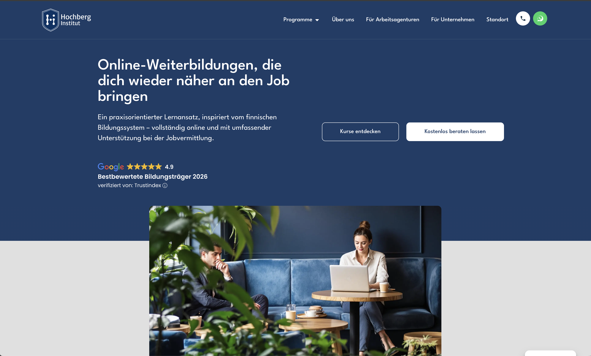
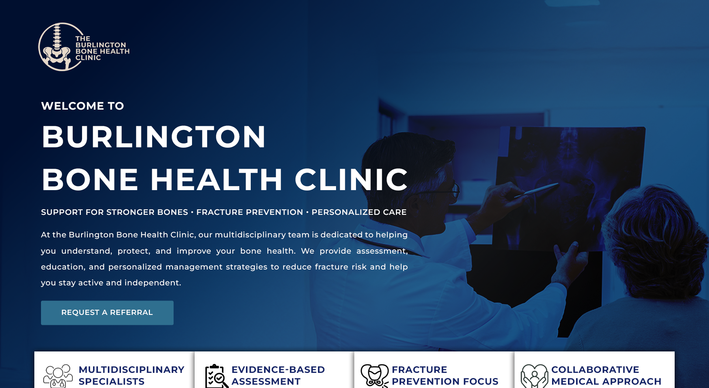
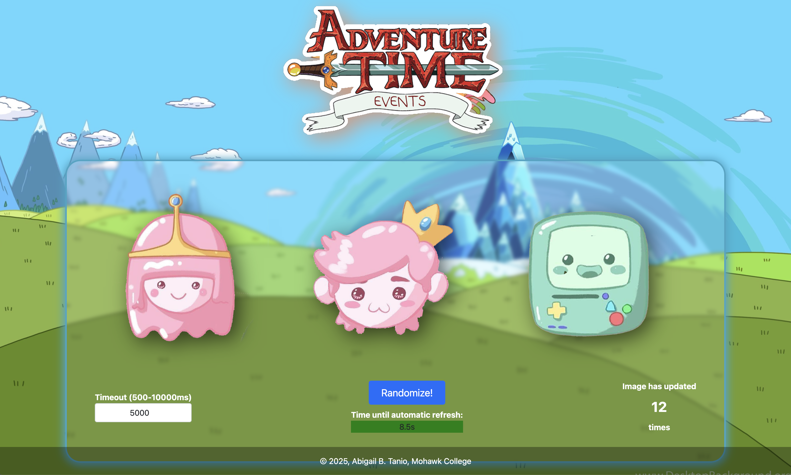
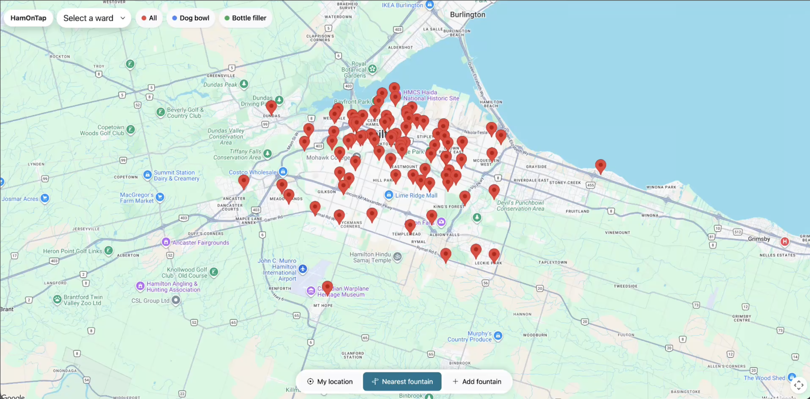

Client project
Hochberg Institute
An e-learning website built on LearnWorlds for Hochberg Institute. I also designed the institute's brand kit and logo.
Visit live site
hey, you found my desk!
my name is
Software developer / IT helpdesk technician in training
Hamilton, Ontario
I solve technical problems, support end users, and build responsive, user-friendly websites.
I'm a Software Support student at Mohawk College with a background in web development, digital design, and technical problem-solving. I'm interested in troubleshooting technical issues, supporting end users, and helping people use technology more effectively.
My experience in web development and running my own small business has helped me develop problem-solving, communication, and project management skills. I'm looking to grow my career in IT support while continuing to build my technical knowledge and contribute to a team.
Computer Systems Technician - Software Support
Hamilton, Ontario, Canada
2024 - 2026 (currently in semester 4)
Bachelor of Science in Hotel and Restaurant Management
Muntinlupa, Philippines
2013 - 2017
Explore my Work
Client project
An e-learning website built on LearnWorlds for Hochberg Institute. I also designed the institute's brand kit and logo.
Visit live site
Client project
A website and brand identity for a local clinic. I created the brand kit (color palette, logo, and business card) and built the website on Squarespace with search engine optimization (SEO) and a mobile-friendly design that is easy for older audiences to use.
Visit live site
Course project
A JavaScript web app that shows three random images, one from each theme, and refreshes them on a countdown timer. Visitors can click an image to swap it with a spin animation, set the refresh time between 500 and 10,000 ms, or randomize on demand while a counter tracks every change.
Request source code
Course project
A responsive web app that maps Hamilton's public drinking fountains. Visitors can filter fountains, find the closest one with their location, and get directions.
Request source code
Course project
A WordPress site for a coffee shop that also rents out study and meeting rooms. It features real products from my earlier startup.
Request source code
IT End User Computing and Helpdesk Co-op
Mohawk College | January 2026 - August 2026
Provided Tier 1 IT support to students, faculty, and staff, troubleshooting hardware, software, Wi-Fi, printing, and eLearn/MyCanvas issues. Maintained classroom AV systems, configured Windows devices, managed IT inventory, and supported classroom and event technology setups.
Web Developer
Burlington Bone Health Clinic | December 2025 - June 2026 (part-time, hybrid/remote)
Created the clinic's brand kit (color palette, logo, and business card). Designed and built the clinic's website on Squarespace with search engine optimization (SEO) and a mobile-friendly design that is easy for older audiences to use.
Graphic Designer / Web Designer
Growstage | September 2023 - September 2026
Created digital and print advertisements that followed brand guidelines. Designed an e-learning website on LearnWorlds for Hochberg Institute, including its brand kit and logo.
Mohawk College, Hamilton, Ontario, Canada
Computer Systems Technician - Software Support (2024 - 2026), in progress (semester 4).
Lyceum of Alabang, Muntinlupa, Philippines
Bachelor of Science in Hotel and Restaurant Management (2013 - 2017).
Windows 10/11, macOS, Active Directory, Microsoft Entra ID, Microsoft 365, Networking fundamentals, HTML, CSS, JavaScript, WordPress, Squarespace, Git and GitHub.
Download my resume (PDF) View online CVLet's talk!
I'd love to hear about IT and Web design opportunities. Email is the fastest way to reach me.